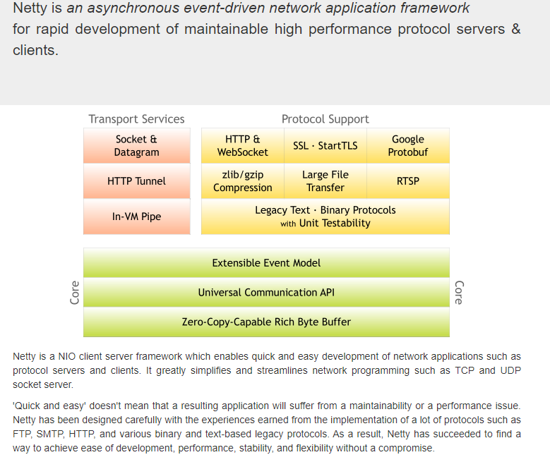

Netty原理分析
一、介绍
简介
Netty是一个异步事件驱动的网络应用程序框架，用于快速开发可维护的高性能服务器和客户端。
Netty是一个NIO客户端-服务端框架，支持快速、简单地开发网络应用程序，如服务器和客户机。它大大简化了网络编程，如TCP和UDP、Socket服务器。
"快速和简单"并不意味着生成的应用程序将受到可维护性或性能问题的影响。Netty经过精心设计，并积累了许多协议的实施经验（如 ftp、smtp、http），以及各种二进制和基于文本的遗留协议。Netty成功地找到了一种方法，在不妥协的情况下实现了易于开发、性能、稳定性和灵活性。可以简单理解Nett也是基于NIO的网络层框架。
Netty优点：
对各种传输协议提供统一的API。
高度可定制的线程模型——单线程、一个或多个线程池。
更好的吞吐量，更低的等待延迟。
更少的资源消耗。
最小化不必要的内存拷贝。
Java原生的NIO缺点：
NIO的类库和API繁杂，使用麻烦。需要熟练掌握Selector、ServerSocketChannel、SocketChannel、ByteBuffer等。
可靠性不强，开发工作量和难度都非常大。
NIO的Bug。例如EpollBug，它会导致Selector空轮询，最终导致CPU100%。
Netty应用场景：
Dubbo、zk、RocketMQ、ElasticSearch、Spring5(对 HTTP 协议的实现)、GRpc、Spark 等大型开源项目都在使用 Netty 作为底层通讯框架。
Netty可以用作Http服务器（但Netty没有对Servlet实现）、Socket开发（服务与服务之间的通信）【Dubbo、Spark】、长连接的开发【WebSocket 全双工通信模式】。
架构
架构图：

执行流程：
线程模型
一主多从线程模型
一主多从模型说明：
Netty抽象出两组线程池BossGroup和WorkerGroup，BossGroup专门负责接收客户端的连接，WorkerGroup专门负责网络的读写。
BossGroup和WorkerGroup类型都是NioEventLoopGroup。
NioEventLoopGroup相当于一个事件循环线程组，这个组中含有多个事件循环线程，每一个事件循环线程是NioEventLoop。
每个NioEventLoop都有一个selector，用于监听注册在其上的socketChannel的网络通讯。
每个Boss NioEventLoop线程内部循环执行的步骤有3步：
处理accept事件，与client建立连接，生成NioSocketChannel。
将NioSocketChannel注册到某个Worker NIOEventLoop上的selector。
处理任务队列的任务，即runAllTasks。
每个worker NIOEventLoop线程循环执行的步骤：
轮询注册到自己selector上的所有NioSocketChannel 的read/write事件。
处理I/O事件（read/write 事件）， 在对应NioSocketChannel处理业务。
runAllTasks处理任务队列TaskQueue的任务，一些耗时的业务处理一般可以放入TaskQueue中慢慢处理，这样不影响数据在 pipeline中的流动处理。
每个Worker NIOEventLoop处理NioSocketChannel业务时，会使用pipeline (管道)，Pipeline中维护了很多handler处理器用来处理channel中的数据。
多主多从模型：多主指的是多个BossGroup，每个Bossgroup监听一个端口号，在实际中应用的比较少。
核心组件
ChannelHandler以及实现类
ChannelInboundHandler接口定义了许多事件处理的方法， 我们可以通过重写这些方法去实现具体的业务逻辑。
我们经常需要自定义一个Handler类去继承ChannelInboundHandlerAdapter，然后通过重写相应方法实现业务逻辑， 我们接下来看看一般都需要重写哪些方法：
281public interface ChannelInboundHandler extends ChannelHandler {2 // channel注册事件3 void channelRegistered(ChannelHandlerContext ctx) throws Exception;4 5 // channel未注册事件6 void channelUnregistered(ChannelHandlerContext ctx) throws Exception;7
8 // Channel就绪事件9 void channelActive(ChannelHandlerContext ctx) throws Exception;10
11 // Channel不活跃事件12 void channelInactive(ChannelHandlerContext ctx) throws Exception;13
14 // Channel读取数据事件15 void channelRead(ChannelHandlerContext ctx, Object msg) throws Exception;16
17 // Channel数据读取完毕事件18 void channelReadComplete(ChannelHandlerContext ctx) throws Exception;19 20 void userEventTriggered(ChannelHandlerContext ctx, Object evt) throws Exception;21
22 void channelWritabilityChanged(ChannelHandlerContext ctx) throws Exception;23
24 // Channel发生异常事件25 26 ("deprecation")27 void exceptionCaught(ChannelHandlerContext ctx, Throwable cause) throws Exception;28}ChannelPipeline
ChannelPipeline是一个Handler的集合， 它负责处理和拦截inbound或者outbound的事件和操作，相当于一个贯穿Netty的链。
121public interface ChannelPipeline2 extends ChannelInboundInvoker, ChannelOutboundInvoker, 3 Iterable<Entry<String, ChannelHandler>> {4 5 // 把一个业务处理类（handler）添加到链中的第一个位置6 ChannelPipeline addFirst(String name, ChannelHandler handler);7 8 // 把一个业务处理类（handler）添加到链中的最后一个位置9 ChannelPipeline addLast(String name, ChannelHandler handler);10 11 ....12}说明：以客户端应用程序为例如果事件是从客户端到服务端，那么我们称这些事件为"出站"，即客户端发送给服务端的数据会通过pipeline中的一系列ChannelOutboundHandler处理。调用是从tail到head方向逐个调用每个handler的逻辑)，并被这些Handler处理。
事件从服务端到客户端称为入站的，入站只调用pipeline里的ChannelInboundHandler逻辑，ChannelInboundHandler调用是从head到tail方向逐个调用每个handler的逻辑。
ChannelHandlerContext
事件处理器上下文对象，Pipelin链中的实际处理节点。每个处理节点ChannelHandlerContext中包一个具体的事件处理器ChannelHandler，也绑定了对应的pipeline和Channel的信息(方便对ChannelHandler进行调用)。
121public interface ChannelHandlerContext extends AttributeMap, ChannelInboundInvoker, ChannelOutboundInvoker {2 // 关闭Channel3 ChannelFuture close();4 5 // 刷新Channel6 7 ChannelHandlerContext flush();8 9 // 将数据写到ChannelPipeline当前的ChannelHandler的下一个ChannelHandler开始处理（出站）10 ChannelFuture writeAndFlush(Object msg);11 ....12}ChannelFuture
Netty中所有的I/O操作都是异步的，即操作不会立即返回结果，所以Nett定义了一个channelFuture对象作为异步操作的"代言人"，表示异步操作本身。如果需要·获取到该异步操作的值，可以通过该异步操作对象addListener()方法为该异步操作添加监听器，添加回调，等结果出来之后立马执行回调。
Netty的异步编程模型都是建立在Future与回调概念之上的。
101public interface ChannelFuture extends Future<Void> {2 // 返回当前正在进行IO操作的Channel3 Channel channel();4 5 // 等待异步操作执行完毕6 7 ChannelFuture sync() throws InterruptedException;8 9 .....10}EventLoopGroup及实现类NioEventLoopGroup
EventLoopGroup是一个EventLoop池，包含很多的EvenetLoop，是一组EventLoop的抽象，Netty为了更好的利用多核CPU资源，一般会有多个EventLoop同时工作，每个EventLoop维护着一个Selector实例。EventLoopGroup提供next接口按照一定规则获取到EventLoop来处理任务。
在Netty服务器端编程中，我们一般都需要提供两个EventLoopGroup，例如：ParentEventLoopGroup和ChildEventLoopGroup。
Netty为每个Channel分配了一个EventLoop，用于连接用户的请求和对用户请求的处理等所有事件。EventLoop本身是一个线程驱动，在其生命周期内会绑定一个让该线程处理一个Channel的所有IO事件。
一个Channel只能绑定一个EventLoop，一个EventLoop可以绑定多个Channel，一个EventLoop只能绑定一个线程。
111public class NioEventLoopGroup extends MultithreadEventLoopGroup {2 // 父类中的方法，断开连接，关闭线程3 4 public Future<?> shutdownGracefully(long quietPeriod, long timeout, TimeUnit unit) {5 for (EventExecutor l: children) {6 l.shutdownGracefully(quietPeriod, timeout, unit);7 }8 return terminationFuture();9 }10 .....11}ServerBootstrap和Bootstrap
ServerBootstrap是服务器端启动助手，通过它可以完成服务器端的各种配置。
741// 常用的方法2public class ServerBootstrap extends AbstractBootstrap<ServerBootstrap, ServerChannel> {3 4 // 设置2个EventLoop5 public ServerBootstrap group(EventLoopGroup parentGroup, EventLoopGroup childGroup) {6 super.group(parentGroup);7 if (childGroup == null) {8 throw new NullPointerException("childGroup");9 }10 if (this.childGroup != null) {11 throw new IllegalStateException("childGroup set already");12 }13 this.childGroup = childGroup;14 return this;15 }16 17 // 设置一个服务器端的通道实现18 public B channel(Class<? extends C> channelClass) {19 if (channelClass == null) {20 throw new NullPointerException("channelClass");21 }22 return channelFactory(new ReflectiveChannelFactory<C>(channelClass));23 }24 25 // 给ServerChannel添加配置26 public <T> B option(ChannelOption<T> option, T value) {27 if (option == null) {28 throw new NullPointerException("option");29 }30 if (value == null) {31 synchronized (options) {32 options.remove(option);33 }34 } else {35 synchronized (options) {36 options.put(option, value);37 }38 }39 return self();40 }41 42 43 // 给接收到的Channel添加配置44 public <T> ServerBootstrap childOption(ChannelOption<T> childOption, T value) {45 if (childOption == null) {46 throw new NullPointerException("childOption");47 }48 if (value == null) {49 synchronized (childOptions) {50 childOptions.remove(childOption);51 }52 } else {53 synchronized (childOptions) {54 childOptions.put(childOption, value);55 }56 }57 return this;58 }59 60 // 设置业务处理类（自定义的handler）61 public ServerBootstrap childHandler(ChannelHandler childHandler) {62 if (childHandler == null) {63 throw new NullPointerException("childHandler");64 }65 this.childHandler = childHandler;66 return this;67 }68 69 // 设置占用的端口号70 public ChannelFuture bind(int inetPort) {71 return bind(new InetSocketAddress(inetPort));72 }73 ....74}Bootstrap是客户端启动助手，通过它可以完成客户端的各种配置。
211// 常用的方法2public class Bootstrap extends AbstractBootstrap<Bootstrap, Channel> {3 4 // 设置一个 EventLoop5 public B group(EventLoopGroup group) {6 if (group == null) {7 throw new NullPointerException("group");8 }9 if (this.group != null) {10 throw new IllegalStateException("group set already");11 }12 this.group = group;13 return self();14 }15
16 // 用来连接服务器端17 public ChannelFuture connect(String inetHost, int inetPort) {18 return connect(InetSocketAddress.createUnresolved(inetHost, inetPort));19 }20 ....21}二、ByteBuf详解
在JavaNio包中有个ByteBuffer缓冲，但是过于难用，还需要经常转换读写形式，Netty对ByteBuffer进一步封装了一个ByteBuf。
从结构上来说，ByteBuf由一串字节数组构成。数组中每个字节用来存放信息。ByteBuf提供了两个索引，一个用于读取数据，一个用于写入数据。这两个索引通过在字节数组中移动，来定位需要读或者写信息的位置。
当从ByteBuf读取时，它的readerIndex（读索引）将会根据读取的字节数递增（getBytes的时候不会增长）。
当写ByteBuf时，它的writerIndex也会根据写入的字节数进行递增。
注意：极限的情况是readerIndex刚好读到了writerIndex写入的地方。如果readerIndex超过了writerIndex的时候，Netty会抛出 IndexOutOf-BoundsException异常。
761// ByteBuf使用2import io.netty.buffer.ByteBuf;3import io.netty.buffer.Unpooled;4import io.netty.util.CharsetUtil;5
6/**7 * NettyByteBufDemo 使用Demo8 */9public class NettyByteBufDemo {10 public static void main(String[] args) {11 /**12 *创建byteBuf对象，该对象内部包含一个字节数组byte[10]13 *通过reader index和writerIndex和capacity，将buffer分成三个区域14 *已经读取的区域：[0,readerindex)15 *可读取的区域：[readerindex,writerIndex)16 *可写的区域:[writerIndex,capacity)17 */18
19 //创建一个ByteBuffer20 ByteBuf byteBuf = Unpooled.buffer(10);21 System.out.println("byteBuf=" + byteBuf);22
23 //往里边写入24 for (int i = 0; i < 8; i++) {25 byteBuf.writeByte(i);26 }27 System.out.println("byteBuf=" + byteBuf);28
29 //读取byteBuffer get 但是readIndex不会发生变化30 for (int i = 0; i < 5; i++) {31 System.out.println(byteBuf.getByte(i));32 }33 System.out.println("byteBuf=" + byteBuf);34
35 //readBytes readIndex会发生变化36 for (int i = 0; i < 5; i++) {37 System.out.println(byteBuf.readByte());38 }39 System.out.println("byteBuf=" + byteBuf);40
41
42 //用Unpooled工具类创建ByteBuf43 ByteBuf byteBuf2 = Unpooled.copiedBuffer("hello,zhuge!", CharsetUtil.UTF_8);44
45 //使用相关的方法46 if (byteBuf2.hasArray()) {47 byte[] content = byteBuf2.array();48 //将content转成字符串49 System.out.println(new String(content, CharsetUtil.UTF_8));50 System.out.println("byteBuf=" + byteBuf2);51
52 // 053 System.out.println(byteBuf2.readerIndex());54 // 1255 System.out.println(byteBuf2.writerIndex());56 // 3657 System.out.println(byteBuf2.capacity());58 // 获取数组0这个位置的字符h的ascii码，h=10459 System.out.println(byteBuf2.getByte(0));60
61 // 可读的字节数1262 int len = byteBuf2.readableBytes();63 System.out.println("len=" + len);64
65 //使用for取出各个字节66 for (int i = 0; i < len; i++) {67 System.out.println((char) byteBuf2.getByte(i));68 }69
70 //范围读取71 System.out.println(byteBuf2.getCharSequence(0, 6, CharsetUtil.UTF_8));72 System.out.println(byteBuf2.getCharSequence(6, 6, CharsetUtil.UTF_8));73 }74 }75}76
三、Netty中编解码、拆粘包、零拷贝
Netty编解码
Netty中涉及到的编解码的组件有Channel、ChannelHandler、ChannelPipeline等。编码就是将对象转换成字节数组，解码就是将字节数组转换成原来的对象。
在Netty中编码器和解码器都会实现ChannelInboundHadnler或者ChannelOutcoundHandler接口，重写readChannel方法来实现pipeline中的责任链执行模式。
Netty中提供有常用的编码和解码器：
| 类型 | 编码器 | 解码器 |
|---|---|---|
| 字符串 | new StringDecoder() | new StringDecoder() |
| 对象 | new ObjectEncoder() | new ObjectDecoder(ClassResolvers.cacheDisabled(null)) |
| 自定义 | 需要继承MessageToByteEncoder | 需要继承ByteToMessageDecoder |
自定义编码器
201public class RpcEncoder extends MessageToByteEncoder {2 private Class<?> clazz;3 private Serializer serializer;4
5
6 public RpcEncoder(Class<?> clazz, Serializer serializer) {7 this.clazz = clazz;8 this.serializer = serializer;9 }10
11
12 13 protected void encode(ChannelHandlerContext channelHandlerContext, Object msg, ByteBuf byteBuf) throws Exception {14 if (clazz != null && clazz.isInstance(msg)) {15 byte[] bytes = serializer.serialize(msg);16 byteBuf.writeInt(bytes.length);17 byteBuf.writeBytes(bytes);18 }19 }20}自定义解码器
201public class RpcDecoder extends ByteToMessageDecoder {2
3 private Class<?> clazz;4 private Serializer serializer;5
6 public RpcDecoder(Class<?> clazz, Serializer serializer) {7 this.clazz = clazz;8 this.serializer = serializer;9 }10
11 12 protected void decode(ChannelHandlerContext ctx, ByteBuf in, List<Object> out) throws Exception {13 if (clazz != null && in != null) {14 byte[] bytes = new byte[in.readInt()];15 in.readBytes(bytes);16 Object obj = serializer.deserialize(clazz, bytes);17 out.add(obj);18 }19 }20}使用
21pipeline.addLast(new RpcDecoder(RpcRequest.class, new JSONSerializer()));2pipeline.addLast(new RpcEncoder(Result.class, new JSONSerializer()));拆包与粘包
Netty是基于TCP协议的网络通信，TCP传输协议存在拆包和粘包的情况。拆包和粘包可以同时发生在发送方和接收方。
发送方通过网络一批一批发送二进制数据包，那么这一批二进制包称为一帧(Frame)，在进行TCP协议网络传输时，TCP协议会将用户真正要发送的数据根据当前缓存的实际情况对其进行拆分和重组，变为用于网络传输的Frame。这个拆分和重组的过程就是拆包和粘包。在Netty中就是将ByteBuf中的数据拆分或重组成二进制的Frame。而接收方则需要将接收到的Frame中的数据进行重组或拆分。重新恢复为发送时的ByteBuf数据。
就是说发送方通过拆包或者粘包的方式ByteBuf重组成一个二进制的Frame，进行网络传输，接收方接收到二进制的Frame之后通过拆包和粘包还原数据。
拆包粘包流程：
当发送的数据比较大的时候对数据进行拆分，拆分成很多个Frame，进行发送，这个就是拆包。
当发送的数据比较小的时候会对数据进行组合成一个Frame，进行发送，这个就是粘包。
在发送方同时进行拆包和装包，比较符合实际情况。拆包和粘包都是TCP底层自动完成的，不需要在自己进行单独的拆包和粘包。
问题分析
拆包粘包产生的问题：当发送端进行拆包或者粘包之后，接收放接受到数据就跟之前的ByteBuffer可能不一致，那么就会导致数据紊乱。
解决方案：为了解决接收方接收到的数据的混乱性，接收方也可以对接收到的Frame包进行粘包与拆包。接收方的拆包粘包实际在做的工作就是解码的工作，这个解码的基本思想是：发送方在发送数据中添加一个分隔标记，并告诉接收方该标记是什么，接收方在接受到Frame之后，会根据分隔标记将数据进行拆分或者合并，产生对应的ByteBuffer数据。
Netty中已经定义好了很多的接收方粘包拆包解决方案，我们可以直接使用。介绍几个最常用的解决方案：
LineBasedFrameDecoder：基于行的帧解码器，会按照行分隔符对数据进行拆包粘包，解码出 ByteBuffer。
241// 服务端2bootstrap.group(parentGroup,childGroup)3.channel(NioServerSocketChannel.class)4.childHandler(new ChannelInitializer<SocketChannel>() {5protected void initChannel(SocketChannel ch) throws Exception {7ChannelPipeline pipeline = ch.pipeline();8// String解码器，将bytebuffer转换成字符串9// 最多5k 超过5k的话就会报错 这个顺序必须要在string之后10// 解决拆包粘包导致的数据混乱问题11pipeline.addLast(new LineBasedFrameDecoder(5120));12pipeline.addLast(new StringDecoder());13//String编码器，将字符串转换成bytebuffer14pipeline.addLast(new StringEncoder());15//自定义处理器16pipeline.addLast(new SocketServerHandler());17}18});19// 客户端21private String message = "Netty is a NIO client server framework " +22"a compromise."23+ System.getProperty("line.separator") //添加一个行分隔符24;
DelimiterBasedFrameDecoder：基于分隔符的帧解码器，即会按照指定分隔符（自定义）对数据进行拆包粘包，解码出 ByteBuf。
271// 服务端2bootstrap.group(parentGroup,childGroup)3.channel(NioServerSocketChannel.class)4.childHandler(new ChannelInitializer<SocketChannel>() {5protected void initChannel(SocketChannel ch) throws Exception {7ChannelPipeline pipeline = ch.pipeline();8//String解码器，将bytebuffer转换成字符串9pipeline.addLast(10new DelimiterBasedFrameDecoder(11// 大小设置5k125120,13// 自定义分隔符14Unpooled.copiedBuffer("####".getBytes())));15pipeline.addLast(new StringDecoder());16// String编码器，将字符串转换成bytebuffer17pipeline.addLast(new StringEncoder());18// 自定义处理器19pipeline.addLast(new SocketServerHandler());20}21});22// 客户端24private String message = "Netty is a NIO client server framework " +25"a compromise."26+ "####" //添加一个自定义分隔符27;
FixedLengthFrameDecoder：固定长度帧解码器，即会按照指定的长度对 Frame 中的数据进行拆粘包。
31ChannelPipeline pipeline = ch.pipeline();2// String解码器，将bytebuffer转换成字符串3pipeline.addLast(new FixedLengthFrameDecoder(11));
LengthFieldBasedFrameDecoder：基于长度域的帧解码器，在使用长度域的帧解码器的时候，也需要在发送的时候进行对应的编码，解码时候才能正常解码。
编码器LengthFieldPrepender：主要是将数据编码为长度域格式的数据进行发送。
111//LengthFieldPrepender构造器2public LengthFieldPrepender(3// 长度域的长度，指定之后解码器的长度域也必须指定同样的长度。4//（单位是字节，取值必须是1, 2, 3, 4, 8）5int lengthFieldLength,6// 要添加到长度域值中的补偿值，长度矫正值。7int lengthAdjustment,8// 发送的数据内容中是否包含长度域，默认为false9boolean lengthIncludesLengthFieldLength) {10this(ByteOrder.BIG_ENDIAN, lengthFieldLength, lengthAdjustment, lengthIncludesLengthFieldLength);11}
解码器LengthFieldBasedFrameDecoder：将接收到的长度域格式的数据解码成正常的content。
171//LengthFieldBasedFrameDecoder构造器2public LengthFieldBasedFrameDecoder(3// 要解码的 Frame 的最大长度4int maxFrameLength,5// 长度域的偏移量6int lengthFieldOffset,7// 长度域的长度8int lengthFieldLength,9// 要添加到长度域值中的补偿值，长度矫正值10int lengthAdjustment,11// 从解码帧中要剥去的前面字节12int initialBytesToStrip) {13this(14maxFrameLength,15lengthFieldOffset, lengthFieldLength, lengthAdjustment,16initialBytesToStrip, true);17}总结：在使用长度域帧编解码器的时候，发送端和接收到的帧编解码必须是成对存在的，必须有一个编码器对应的一个解码器才能正常的传输数据。
长度域使用Server端Demo：
641public class SocketServerDemo {2public static void main(String[] args) {4NioEventLoopGroup parentGroup = new NioEventLoopGroup();5NioEventLoopGroup childGroup = new NioEventLoopGroup();6ServerBootstrap bootstrap = new ServerBootstrap();7bootstrap.group(parentGroup,childGroup)8.channel(NioServerSocketChannel.class)9.childHandler(new ChannelInitializer<SocketChannel>() {10protected void initChannel(SocketChannel ch) throws Exception {12ChannelPipeline pipeline = ch.pipeline();13//指定一个长度域的解码器，14pipeline.addLast(new LengthFieldBasedFrameDecoder(15//最大长度为1k，161024,17//长度域偏移量为0180,19//长度域长度为4【跟编码器的保持一致】204,21//因为包含在剥离长度为4因此长度域指定长度需要减去4个字节22-4,23//因为编码器的长度域是包含在content中所以需要剥离长度为4244));25//服务端给客户端回复数据时候需要添加一个长度域的编码器26pipeline.addLast(new LengthFieldPrepender(4,true));27pipeline.addLast(new StringDecoder());28//String编码器，将字符串转换成bytebuffer29pipeline.addLast(new StringEncoder());30//自定义处理器31pipeline.addLast(new SocketServerHandler());32}33});34try {35ChannelFuture future = bootstrap.bind(9090).sync();36System.out.println("服务器启动成功。监听的端口号为：9090");37future.channel().closeFuture().sync();38} catch (Exception e) {39e.printStackTrace();40} finally {41parentGroup.shutdownGracefully();42childGroup.shutdownGracefully();43}44}45}46//自定义处理器48public class SocketServerHandler extends ChannelInboundHandlerAdapter {49public void channelRead(ChannelHandlerContext ctx, Object msg) throws Exception {52System.out.println(ctx.channel().remoteAddress() + ", " + msg);53// 向客户端发送数据54ctx.channel().writeAndFlush("from server"+ UUID.randomUUID());55//模拟执行业务56TimeUnit.MILLISECONDS.sleep(500);57}58public void exceptionCaught(ChannelHandlerContext ctx, Throwable cause) throws Exception {61cause.printStackTrace();62ctx.channel().close();63}64}
长度域使用Client端Demo：
671public class SocketClientDemo {2public static void main(String[] args) {4NioEventLoopGroup group = new NioEventLoopGroup();5Bootstrap bootstrap = new Bootstrap();6bootstrap.group(group)7.channel(NioSocketChannel.class)8.handler(new ChannelInitializer<SocketChannel>() {9protected void initChannel(SocketChannel ch) throws Exception {11ChannelPipeline pipeline = ch.pipeline();12//指定一个长度域的编码器 长度域长度为4字节，长度域包含在content中13pipeline.addLast(new LengthFieldPrepender(4,true));14//客户端接受数据的时候需要添加一个解码器16//指定一个长度域的解码器，17pipeline.addLast(new LengthFieldBasedFrameDecoder(18//最大长度为1k，191024,20//长度域偏移量为0210,22//长度域长度为4【跟编码器的保持一致】234,24//因为包含在剥离长度为4因此长度域指定长度需要减去4个字节25-4,26//因为编码器的长度域是包含在content中所以需要剥离长度为4274));28pipeline.addLast(new StringEncoder());29pipeline.addLast(new StringDecoder());30pipeline.addLast(new SocketClientHandler());31}32});33//设置远程连接地址35try {36ChannelFuture future = bootstrap.connect("localhost", 9090).sync();37future.channel().closeFuture().sync();38} catch (InterruptedException e) {39e.printStackTrace();40}finally {41group.shutdownGracefully();42}43}44}45//客户端处理器46public class SocketClientHandler extends SimpleChannelInboundHandler<String> {47protected void channelRead0(ChannelHandlerContext ctx, String msg) throws Exception {50System.out.println(ctx.channel().remoteAddress() + "，" + msg);51//给服务端发送时间52ctx.channel().writeAndFlush("from client：" + LocalDateTime.now());53TimeUnit.MILLISECONDS.sleep(500);54}55//发生异常的时候执行该方法57public void exceptionCaught(ChannelHandlerContext ctx, Throwable cause) throws Exception {59ctx.close();60}61//当Channel被激活后会触发该方法的执行63public void channelActive(ChannelHandlerContext ctx) throws Exception {65ctx.channel().writeAndFlush("from client begin!");66}67}

心跳检测机制
介绍：心跳就是在TCP长连接中, 客户端和服务器之间定期发送的一种特殊的数据包, 通知对方自己还在线, 以确保TCP连接的有效性。
Netty中提供了IdleStateHandler处理器来提供心跳机制的实现。
171// IdleStateHandler构造器2
3public IdleStateHandler(4 // 读超时，即当在指定的时间间隔内没有从Channel读取到数据时, 会触发一个READER_IDLE的IdleStateEvent事件。5 int readerIdleTimeSeconds,6 // 写超时，即当在指定的时间间隔内没有数据写入到Channel时, 会触发一个WRITER_IDLE的IdleStateEvent事件。7 int writerIdleTimeSeconds,8 // 读并且写超时，即当在指定的时间间隔内没有读或写操作时, 会触发一个ALL_IDLE的IdleStateEvent事件。9 int allIdleTimeSeconds) {10
11 this(readerIdleTimeSeconds, writerIdleTimeSeconds, allIdleTimeSeconds,12 TimeUnit.SECONDS);13}14
15// 解释：new IdleStateHandler(3,5,0)16// 代表3秒内没有读会触发超时机制，5秒内没有写会触发超时机制，17// 最后一位0不生效 假如>0就是在N秒内既没有发生读也没有发生写出发的条件。Demo：
371// 首先在Pipeline中添加心跳机制的处理器2pipeline.addLast(new IdleStateHandler(3,5,0));3
4// 然后需要在自定义处理器中重写userEventTriggered方法来进行业务判断5/**6 *自定义处理器7 */8public class IdleServerHandler extends ChannelInboundHandlerAdapter {9 int readTimeoutTimes = 0;10 int writeTimeoutTimes = 0;11 12 public void userEventTriggered(ChannelHandlerContext ctx, Object evt) throws Exception {13 if (evt instanceof IdleStateEvent) {14 IdleStateEvent idleEevent = (IdleStateEvent) evt;15 String str = null;16 17 switch (idleEevent.state()) {18 case READER_IDLE: str = "读超时"; ++readTimeoutTimes; break;19 case WRITER_IDLE: str = "写超时"; ++ writeTimeoutTimes; break;20 case ALL_IDLE: str = "读写全超时"; break;21 }22 23 System.out.println(str);24 if (readTimeoutTimes > 3 || writeTimeoutTimes > 3) {25 ctx.channel().close();26 }27 }else{ 28 //其他类型继续执行29 super.userEventTriggered(ctx,evt);30 }31 }32
33 34 public void exceptionCaught(ChannelHandlerContext ctx, Throwable cause) throws Exception {35 ctx.close();36 }37}实现原理：
571public class IdleStateHandler extends ChannelDuplexHandler {2 3 // 读取Channel信息4 5 public void channelRead(ChannelHandlerContext ctx, Object msg) throws Exception {6 if (readerIdleTimeNanos > 0 || allIdleTimeNanos > 0) {7 reading = true;8 firstReaderIdleEvent = firstAllIdleEvent = true;9 }10 // 让channelPipeline中的下一个handler处理channelRead方法。形成责任链处理模式。11 ctx.fireChannelRead(msg);12 }13 14
15 // channel active事件16 17 public void channelActive(ChannelHandlerContext ctx) throws Exception {18 // 实例化，这是IdleStateHandler的精髓就是真正实现源码的19 // This method will be invoked only if this handler was added20 // before channelActive() event is fired. If a user adds this handler21 // after the channelActive() event, initialize() will be called by beforeAdd().22 initialize(ctx);23 24 super.channelActive(ctx);25 }26 27 // 实例化方法28 private void initialize(ChannelHandlerContext ctx) {29 // Avoid the case where destroy() is called before scheduling timeouts.30 // See: https://github.com/netty/netty/issues/14331 switch (state) {32 case 1:33 case 2:34 return;35 }36
37 state = 1;38 initOutputChanged(ctx);39
40 lastReadTime = lastWriteTime = ticksInNanos();41 if (readerIdleTimeNanos > 0) {42 // 读超时任务43 readerIdleTimeout = schedule(ctx, new ReaderIdleTimeoutTask(ctx),44 readerIdleTimeNanos, TimeUnit.NANOSECONDS);45 }46 if (writerIdleTimeNanos > 0) {47 // 写超时任务48 writerIdleTimeout = schedule(ctx, new WriterIdleTimeoutTask(ctx),49 writerIdleTimeNanos, TimeUnit.NANOSECONDS);50 }51 if (allIdleTimeNanos > 0) {52 // 全部超时任务53 allIdleTimeout = schedule(ctx, new AllIdleTimeoutTask(ctx),54 allIdleTimeNanos, TimeUnit.NANOSECONDS);55 }56 }57}看下ReaderIdleTimeoutTask读超时触发的任务：
441private final class ReaderIdleTimeoutTask extends AbstractIdleTask {2
3 ReaderIdleTimeoutTask(ChannelHandlerContext ctx) {4 super(ctx);5 }6
7 // 看run方法8 9 protected void run(ChannelHandlerContext ctx) {10 long nextDelay = readerIdleTimeNanos;11 if (!reading) {12 // 当前时间减去最后一次channelRead方法调用的时间，13 // 假如这个结果是6s，说明最后一次调用channelRead已经是6s之前的事情了，14 // 设置的是5s，那么nextDelay则为-1，说明超时了15 nextDelay -= ticksInNanos() - lastReadTime;16 }17
18 // 如果超时了则会触发下一个handler的。19 if (nextDelay <= 0) {20 // Reader is idle - set a new timeout and notify the callback.21 readerIdleTimeout = schedule(ctx, this, readerIdleTimeNanos, TimeUnit.NANOSECONDS);22
23 boolean first = firstReaderIdleEvent;24 firstReaderIdleEvent = false;25
26 try {27 // 读超时事件28 IdleStateEvent event = newIdleStateEvent(IdleState.READER_IDLE, first);29 // channel通知事件30 channelIdle(ctx, event);31 } catch (Throwable t) {32 ctx.fireExceptionCaught(t);33 }34 } else {35 // Read occurred before the timeout - set a new timeout with shorter delay.36 readerIdleTimeout = schedule(ctx, this, nextDelay, TimeUnit.NANOSECONDS);37 }38 }39}40 41 // 通知事件42 protected void channelIdle(ChannelHandlerContext ctx, IdleStateEvent evt) throws Exception {43 ctx.fireUserEventTriggered(evt);44 }零拷贝
介绍：Netty的接收和发送ByteBuffer采用DIRECT BUFFERS，使用堆外内存进行Socket读写，不需要进行字节缓冲区的二次拷贝。
如果使用传统的JVM堆内存（HEAP BUFFERS）进行Socket读写，JVM会将堆内存Buffer拷贝一份到直接内存中，然后才能写入Socket中。JVM堆内存的数据是不能直接写入Socket中的。相比于堆外直接内存，消息在发送过程中多了一次缓冲区的内存拷贝。
直接内存：Direct Memory并不是虚拟机运行时数据区的一部分，也不是Java虚拟机规范中定义的内存区域，某些情况下这部分内存也会被频繁地使用，而且也可能导致OutOfMemoryError异常出现。Java里用DirectByteBuffer可以分配一块直接内存(堆外内存)，元空间对应的内存也叫作直接内存，它们对应的都是机器的物理内存。
直接内存优缺点：
优点：不占用堆内存空间，减少了发生GC的可能；java虚拟机实现上，本地IO会直接操作直接内存（直接内存=>系统调用=>硬盘/网卡），而非直接内存则需要二次拷贝（堆内存=>直接内存=>系统调用=>硬盘/网卡）。
缺点：初始分配较慢；没有JVM直接帮助管理内存，容易发生内存溢出。
读写空闲检测
当客户端与服务端的连接建立好后，它们之间就可以进行通信了。但是，若某客户端与服务端间长时间没有进行通信，而 Channel 却被长时间占用，就会形成资源浪费。Netty 提供了专门用于进行读写操作空闲检测的处理器可供使用。
241// 添加一个基于行的解码器2//3秒内没有读会触发超时机制3//5秒内没有写会触发超时机制4//最后一位0不生效 假如>0就是在N秒内既没有发生读也没有发生写出发的条件5pipeline.addLast(new IdleStateHandler(3,5,0));6
7//处理器8public class IdleServerHandler extends ChannelInboundHandlerAdapter {9 10 public void userEventTriggered(ChannelHandlerContext ctx, Object evt) throws Exception {11 if (evt instanceof IdleStateEvent) {12 IdleStateEvent idleEevent = (IdleStateEvent) evt;13 String str = null;14 switch (idleEevent.state()) {15 case READER_IDLE: str = "读超时"; break;16 case WRITER_IDLE: str = "写超时"; break;17 case ALL_IDLE: str = "读写全超时"; break;18 }19 System.out.println(str);20 }else{ //其他类型继续执行21 super.userEventTriggered(ctx,evt);22 }23 }24}四、性能优化
添加线程池
在自定义处理器中可以自定义一个线程池来进行优化，因为在自定义处理器中使用的还是主线程，通过压测来确定线程池的数量。
使用netty自带的线程池进行优化。
31//指定一个netty内部的线程池2final EventLoopGroup businessGroup = new NioEventLoopGroup(1000);3ch.pipeline().addLast(businessGroup, ServerHandler.INSTANCE);单机百万连接调优解决思路
通过开多个服务器来监听不同的端口提高系统的tps。
性能总结
主从Reactor线程模型。
NIO多路复用非阻塞。
无锁串行化设计思想。
支持高性能序列化协议。
零拷贝(直接内存的使用)。
ByteBuf内存池设计。
灵活的TCP参数配置能力。
并发优化。
常见面试点
Netty的定位
作为开源框架的底层框架（TCP通信）
71- SpringBoot内置的容器（Tomcat/Jerry）2- Zookeeper数据交互4- Dubbo多协议RPC支持者6- 直接做服务器（消息推送服务，游戏后台）
Netty如何确定要使用哪些编码器和解码器
11- Netty自带的编码器和解码器可以解决99%的业务。可以查看API文档
Netty中涉及到的设计模式
11- 单例模式11- 策略模式11- 装饰者模式11- 观察者模式51- 迭代器模式2- **责任链模式（ChannelPipeline）**4- 工厂模式
Netty中大文件上传的那个handler是怎么做到防止内存撑爆的
31- ByteBuf分片，直接缓冲区，零拷贝，提高内存的利用率。2- 加内存。
Tomcat NIO 方式的调优线程，本质上是对netty的调优吗？
8.5之后开始用Netty。
责任链模式能否用在，一个操作出口参数为另一个操作的入口
11- 执行顺序有关系，有先后11- API 设计 callable(上一次调用的结果) ，msg。
Selector 客户端与服务端之间是什么关系？
31- 客户端：CONNECT、READ、WRITE2- 服务端：ACCEPT、READ、WRITE